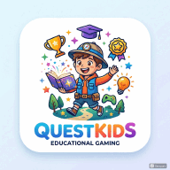

QuestKids is a gamified learning platform for South African primary school learners, aligned to the CAPS curriculum. Kids play curriculum-mapped games across Math, English, Science, Social Sciences, Technology and Life Skills, earning XP, coins and badges while chatting with Questy, an AI study buddy.
Link to your child's account, follow real progress, and know they're learning something real while they play.
Loading QuestKids…